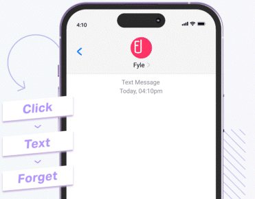

<ion-content class="promote-opt-in-modal">
  <div class="promote-opt-in-modal__skip">
    <span class="promote-opt-in-modal__skip--text" (click)="skip()">{{ 'promoteOptInModal.skip' | transloco }}</span>
  </div>
  <div (click)="optInClick()">
    <div class="promote-opt-in-modal__demo-container">
      
    </div>
    <div class="content-center promote-opt-in-modal__try-ai-text-container">
      <mat-icon class="fy-icon" svgIcon="sparkle"></mat-icon>
      <span class="promote-opt-in-modal__try-ai-text">{{ 'promoteOptInModal.tryAI' | transloco }}</span>
    </div>
    <div class="promote-opt-in-modal__description" [innerHTML]="'promoteOptInModal.description' | transloco"></div>
    <div class="content-center">
      <button class="promote-opt-in-modal__opt-in-btn">
        <mat-icon class="fy-icon promote-opt-in-modal__arrow-icon" svgIcon="arrow-tail-right"></mat-icon>
      </button>
    </div>
  </div>
</ion-content>
